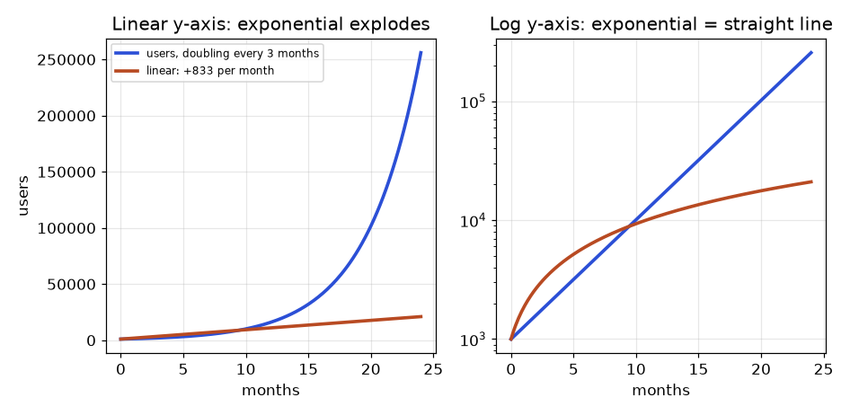
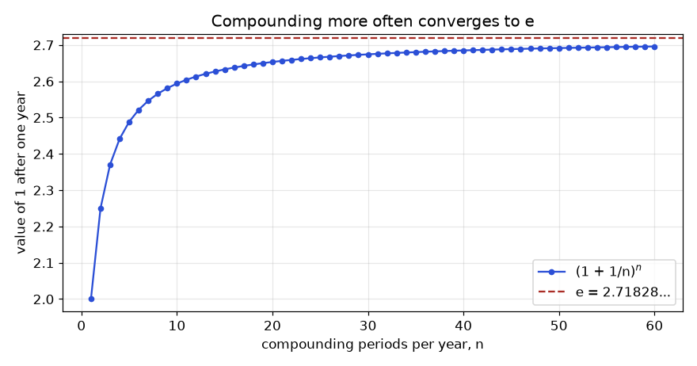
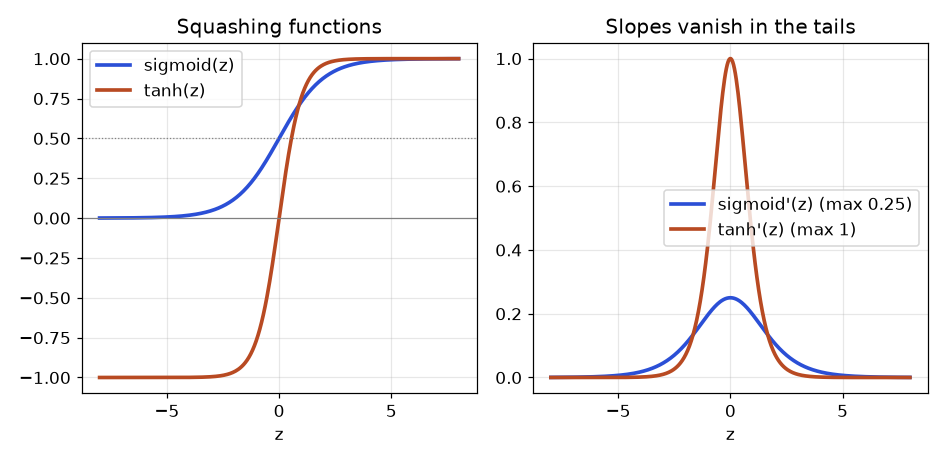
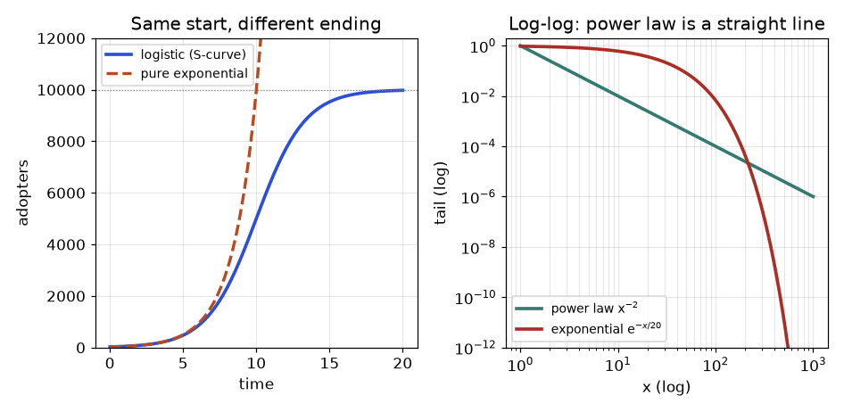
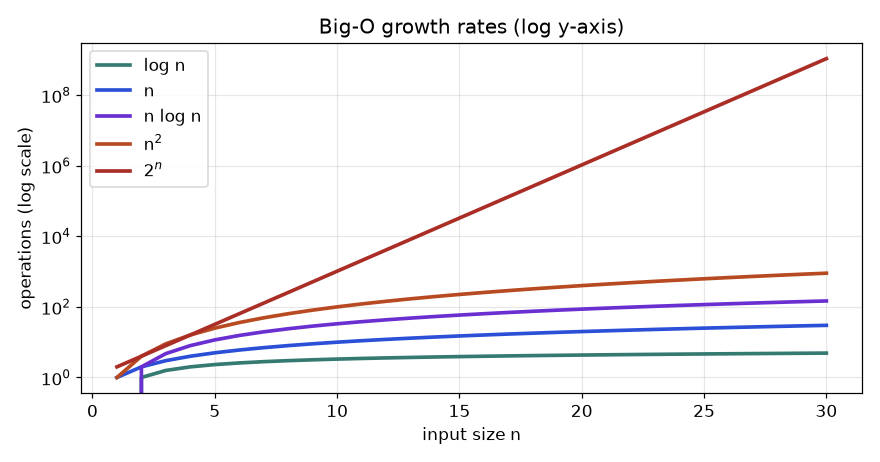

Imagine you run analytics for a small app. In January you have 2,000 users. The product manager says, "We are growing 10 percent a month, so by December we will have 4,400." You build the dashboard, plot the line, and everyone nods. In December you have 6,277 users, and the manager is delighted, but you are uneasy: your forecast was off by almost 2,000, and you do not know why. Later the same year, your model's training log prints loss: nan halfway through a night-long run, and a classmate tells you, "Use log-probabilities and subtract the max." You do it, it works, and you have no idea what you just did.
Both stories have one root cause: the exponential function and its inverse, the logarithm. Growth that compounds, probabilities that multiply, scores that must become probabilities, numbers that are too big or too small for a computer: they all live here. This chapter takes you from "what does 210 mean" to "why does every classifier end with a sigmoid or softmax, why do we minimise log-loss, and why does log1p exist".
After this chapter you will be able to: compute doubling times and half-lives by hand; derive the number e from compound interest; use and prove the log rules; choose between ln, log10 and log2; read and draw log-scale charts; turn skewed data and percent changes into well-behaved log numbers; derive the sigmoid from log-odds and the softmax from it; implement log-sum-exp and explain why it prevents overflow; explain why we add log-probabilities instead of multiplying probabilities; compute cross-entropy by hand; tell an S-curve from an exponential and a power law from both; compare Big-O growth rates with real timings; and avoid the floating-point traps that quietly ruin models. We use only school algebra plus Chapters 1 and 2 (functions and graphs). Derivatives are previewed lightly and are taught properly in Chapter 10.
A power bn means "multiply b by itself n times": 25 = 2·2·2·2·2 = 32. Here b is the base and n is the exponent. You need five rules, and every one follows from that definition.
| Rule | Example | Why it is true |
|---|---|---|
| bm · bn = bm+n | 23 · 24 = 27 = 128 | 3 twos then 4 twos: 7 twos in a row |
| bm / bn = bm−n | 27 / 24 = 23 = 8 | cancel 4 twos from the top and bottom |
| (bm)n = bmn | (23)2 = 26 = 64 | 2 groups of 3 twos = 6 twos |
| b0 = 1 | 50 = 1 | bn/bn = bn−n = b0, and anything divided by itself is 1 |
| b−n = 1 / bn, b1/2 = √b | 2−3 = 1/8; 91/2 = 3 | b−n · bn = b0 = 1; and (b1/2)2 = b |
Now the key idea. If a quantity is multiplied by a fixed growth factor g each period, then after t periods it is
where N0 is the starting amount. A rate of r percent per period gives g = 1 + r/100. Growth of 10 percent means g = 1.10. A loss of 20 percent means g = 0.80. Any g bigger than 1 is growth; any g between 0 and 1 is decay.
Problem 3.1.1 The app has 2,000 users and grows 10 percent per month. How many users after 12 months, and what was wrong with "4,400"?
| Formula | N(t) = N0 · gt, with g = 1 + 0.10 = 1.10 |
|---|---|
| Plug in | N(12) = 2000 · 1.112 |
| Compute | 1.12 = 1.21; 1.14 = 1.4641; 1.18 = 2.14359; 1.112 = 1.18 · 1.14 = 2.14359 × 1.4641 = 3.13843. So N = 2000 × 3.13843 = 6276.9, about 6,277. |
| Meaning | "4,400" came from 2000 × (1 + 12 × 0.10) = 2000 × 2.2, which is linear growth: it adds 10 percent of the original 2,000 each month. Real growth adds 10 percent of the current number, which is larger every month. |
import numpy as np
users0, g = 2000, 1.10
months = np.arange(0, 13)
users = users0 * g ** months
linear = users0 * (1 + 0.10 * months)
print("exponential at month 12:", round(users[-1], 1))
print("linear at month 12: ", round(linear[-1], 1))
print("gap:", round(users[-1] - linear[-1], 1))exponential at month 12: 6276.9
linear at month 12: 4400.0
gap: 1876.9Two special questions come up constantly. How long until the quantity doubles? How long until it halves? If it doubles every T periods, write the formula directly with base 2:
The exponent t/T counts "how many doublings have happened". Doubling three times is 23 = 8 times bigger, and that works for fractions too: half a doubling is 20.5 = 1.414 times bigger.
Problem 3.1.2 Caffeine has a half-life of about 5 hours. You drink a coffee with 200 mg. How much is still in your body after 12.5 hours?
| Formula | N(t) = N0 · (1/2)t/H |
|---|---|
| Plug in | t/H = 12.5 / 5 = 2.5 half-lives, so N = 200 · 0.52.5 |
| Compute | 0.52 = 0.25 and 0.50.5 = 0.7071, so 0.52.5 = 0.25 × 0.7071 = 0.17678. N = 200 × 0.17678 = 35.36 mg. |
| Check | After 10 hours (2 half-lives) 50 mg remain; after 15 hours (3) 25 mg. 35.36 is between them. Good. |
half_life, dose = 5, 200
for hours in [0, 5, 10, 12.5, 15]:
print(hours, "h:", round(dose * 0.5 ** (hours / half_life), 2), "mg")0 h: 200.0 mg
5 h: 100.0 mg
10 h: 50.0 mg
12.5 h: 35.36 mg
15 h: 25.0 mgCompound interest is the same formula with money. Invest P at annual rate r (as a decimal) for t years, interest added once a year: A = P(1 + r)t. With 1,000 at 5 percent for 10 years, A = 1000 × 1.0510 = 1000 × 1.62889 = 1,628.89. Simple interest would give only 1000 × (1 + 10 × 0.05) = 1,500.
The faster the growth, the shorter the doubling time. To solve for the unknown exponent we need a logarithm, which is Section 3.3. Until then there is a famous shortcut: the rule of 72. Doubling time in periods is roughly 72 divided by the percent rate. At 6 percent: 72 / 6 = 12 years. The exact answer (we derive it in Section 3.3) is 11.90 years, so the shortcut is within 1 percent.
Problem 3.1.3 (viral spread) A new feature is shared so that every user who sees it passes it to 3 new users in the next round (the reproduction factor R = 3). One person starts. How many new people see it in round 10? What if R = 0.8?
| Formula | new people in round k = Rk |
|---|---|
| Plug in | R = 3, k = 10: 310. Powers: 32 = 9, 34 = 81, 35 = 243, so 310 = 2432 = 59,049. |
| Other case | R = 0.8: 0.810 = 0.1074 new people, meaning the chain has essentially died out. |
| Meaning | R above 1 explodes, R below 1 fizzles, R = 1 is the knife edge. This single threshold is why epidemiologists and growth teams both obsess over R. |
for R in [3, 1, 0.8]:
rounds = [R ** k for k in range(11)]
print("R =", R, "round 10:", round(rounds[10], 4))
penny = 0.01 * 2 ** 29
print("a penny doubled for 30 days, day 30 payout:", penny)R = 3 round 10: 59049
R = 1 round 10: 1
R = 0.8 round 10: 0.1074
a penny doubled for 30 days, day 30 payout: 5368709.12Discrete rate versus continuous rate. "10 percent per month" has g = 1.1, but you may also write g = ek (e is introduced next section), so k = ln 1.1 = 0.0953 per month. The two descriptions are the same curve. Continuous rates are handy because they add across time and across effects, which we exploit with log-returns in Section 3.4.
Exponential decay in machine learning. A learning rate schedule that multiplies by 0.96 every epoch is exponential decay. An exponential moving average (EMA) with smoothing weight 0.9 keeps 90 percent of the old average each step, so the weight of a value k steps ago is 0.9k. After 10 steps it is 0.910 = 0.349, and its half-life is the k with 0.9k = 0.5, which we will solve to get 6.58 steps. Adam, momentum and batch-norm running statistics all use this.
s.pct_change() staying roughly constant.import numpy as np
import pandas as pd
s = pd.Series([100, 130, 169, 219.7, 285.61]) # grows by 30% each step
print("differences:", s.diff().round(2).tolist()[1:])
print("ratios: ", (s / s.shift()).round(3).tolist()[1:])
print("pct_change: ", s.pct_change().round(3).tolist()[1:])differences: [30.0, 39.0, 50.7, 65.91]
ratios: [1.3, 1.3, 1.3, 1.3]
pct_change: [0.3, 0.3, 0.3, 0.3]
How to read it: on the left the blue curve is flat for a year and then rockets, while the orange line grows steadily. On the right the y-axis is logarithmic, so every step up the axis is a multiplication. The exponential becomes a straight line, because "multiply by the same factor each step" is "move up by the same distance each step". Remember this picture: it is the reason log axes exist.
With annual rate 100 percent split into n equal parts, each part pays 1/n, and you compound n times. After one year 1 dollar becomes (1 + 1/n)n.
| Payments n | (1 + 1/n)n | By hand |
|---|---|---|
| 1 | 2.00000 | (1 + 1)1 |
| 2 | 2.25000 | 1.5 × 1.5 |
| 4 | 2.44141 | 1.254 = 1.5625 × 1.5625 |
| 12 | 2.61304 | (13/12)12 |
| 365 | 2.71457 | daily compounding |
| 1,000,000 | 2.71828 | essentially continuous |
The sequence rises and levels off. Its limit is defined to be e:
import numpy as np
for n in [1, 2, 4, 12, 365, 1_000_000]:
print(f"n={n:>9}: {(1 + 1 / n) ** n:.6f}")
print("np.e :", round(np.e, 6))n= 1: 2.000000
n= 2: 2.250000
n= 4: 2.441406
n= 12: 2.613035
n= 365: 2.714567
n= 1000000: 2.718280
np.e : 2.718282
How to read it: the dots show the value of 1 dollar after a year for n compounding periods. The first few doublings of n add a lot; by n = 60 the dots hug the dashed line at e. Nature has a speed limit on compounding, and e is the limit.
For rate r (decimal) and time t years, compounding n times a year gives P(1 + r/n)nt. Letting n grow gives continuous compounding:
Why? Put m = n/r. Then (1 + r/n)nt = (1 + 1/m)m·rt = [(1 + 1/m)m]rt, and as n grows so does m, so the bracket tends to e. In general ex = lim (1 + x/n)n.
Problem 3.2.1 Invest 1,000 at 5 percent for 10 years. Compare annual, monthly and continuous compounding.
| Annual | 1000 × 1.0510 = 1628.89 |
|---|---|
| Monthly | n = 12, nt = 120: 1000 × (1 + 0.05/12)120 = 1000 × 1.004167120 = 1647.01 |
| Continuous | 1000 × e0.05 × 10 = 1000 × e0.5 = 1000 × 1.64872 = 1648.72 |
| Meaning | Going from yearly to continuous adds only 19.83. The ceiling is real. |
import numpy as np
P, r, t = 1000, 0.05, 10
print("annual :", round(P * (1 + r) ** t, 2))
print("monthly :", round(P * (1 + r / 12) ** (12 * t), 2))
print("continuous:", round(P * np.exp(r * t), 2))annual : 1628.89
monthly : 1647.01
continuous: 1648.72There is another way to see e: as a sum. Expanding (1 + 1/n)n with the binomial theorem gives terms C(n,k)/nk, and for large n each of those approaches 1/k!, where k! = k × (k−1) × ... × 1 (so 4! = 24). Therefore
Ten terms already give 2.7182818, correct to seven decimals. This series is how calculators compute e (Chapter 11 returns to it as a Taylor series).
Problem 3.2.2 (effective annual rate) A card charges 12 percent a year "compounded monthly". What does a customer really pay per year?
| Idea | Monthly rate = 12% / 12 = 1% = 0.01. One year is 12 compounding steps. |
|---|---|
| Compute | 1.0112 = 1.126825, so the effective rate is 12.6825 percent. |
| Meaning | Quoted ("nominal") rates hide compounding. Always convert to the effective rate before comparing products. |
import math
terms = [1 / math.factorial(k) for k in range(11)]
print("sum of 11 terms:", round(sum(terms), 7))
print("effective rate :", round((1 + 0.12 / 12) ** 12 - 1, 6))sum of 11 terms: 2.7182818
effective rate : 0.126825Why e is special: the slope equals the height. Every exponential bx has a slope proportional to its height, but only for b = e is the constant exactly 1: the curve ex has slope ex at every point. You can see a hint: ex ≈ 1 + x for small x, so the curve through (0, 1) has slope 1 there. That is why e is the "natural" base: calculus is cleanest with it, and Chapter 10 proves it. Every other base is a rescaling, since bx = ex ln b.
Where ex appears in data work. Decay curves e−t/τ (τ is the "time constant": after one τ, 36.8 percent remains); the Poisson probability of zero events, e−λ; the Gaussian bell curve e−x²/2; the sigmoid and softmax of Section 3.5; and the exponential family of distributions in statistics (see the Statistics document, Chapter 1). Interviewers sometimes ask "why is e the base used in machine learning?": the honest answer is that derivatives and log-likelihoods of e-based formulas are the simplest, and changing the base only rescales by a constant.
| Log statement | Same fact as a power | Value |
|---|---|---|
| log10(1000) | 10? = 1000 | 3 |
| log2(64) | 2? = 64 | 6 |
| log2(1/8) | 2? = 0.125 | −3 |
| log5(1) | 5? = 1 | 0 (any base) |
| logb(b) | b? = b | 1 |
| ln(e5) | e? = e5 | 5 |
Two special names you will use daily. log10 counts powers of ten (digits). ln is the natural logarithm, the log with base e. A third is log2, which counts doublings and bits. In Python: np.log is ln (natural log, not base 10), np.log10, np.log2. The undoing property is written
Problem 3.3.1 Find (a) log3(81), (b) log10(0.001), (c) ln(1), (d) log4(8).
| (a) | 3? = 81. 3, 9, 27, 81: that is 4 threes. Answer 4. |
|---|---|
| (b) | 0.001 = 1/1000 = 10−3. Answer −3. |
| (c) | e0 = 1, so ln 1 = 0. |
| (d) | 4? = 8. Write both as powers of 2: 4 = 22, 8 = 23, so (22)x = 23, 2x = 3, x = 1.5. |
import numpy as np
print(np.log(81) / np.log(3), np.log10(0.001), np.log(1), np.log(8) / np.log(4))4.0 -3.0 0.0 1.5(Computing a log by dividing two other logs can leave a tiny rounding error in the last digit, for example np.log(1000) / np.log(10) gives 2.9999999999999996. We meet this floating-point detail again in Section 3.8; np.isclose is the right way to compare.)
The magic of logarithms is that they turn multiplication into addition. Let M and N be positive and p any number. Put x = logb(M) and y = logb(N), which means M = bx and N = by. Every rule below is proved from the power rules of Section 3.1.
| Rule | Formula | Proof |
|---|---|---|
| Product | logb(MN) = logb(M) + logb(N) | MN = bx · by = bx+y, so the exponent of MN is x + y |
| Quotient | logb(M/N) = logb(M) − logb(N) | M/N = bx / by = bx−y |
| Power | logb(Mp) = p · logb(M) | Mp = (bx)p = bxp |
| Change of base | logb(M) = logc(M) / logc(b) | From M = bx take logc of both sides and use the power rule: logc(M) = x · logc(b). Divide by logc(b). |
| Reciprocal | logb(1/N) = −logb(N) | quotient rule with M = 1 and log 1 = 0 |
Problem 3.3.2 Given log10(2) = 0.3010 and log10(3) = 0.4771, find log10(6), log10(1.5) and log10(8) without a calculator.
| log 6 | 6 = 2 × 3, so product rule: 0.3010 + 0.4771 = 0.7781 |
|---|---|
| log 1.5 | 1.5 = 3/2, so quotient rule: 0.4771 − 0.3010 = 0.1761 |
| log 8 | 8 = 23, so power rule: 3 × 0.3010 = 0.9030 |
| Check | 100.7781 should be about 6: it is 5.9993. Close, because the logs were rounded to 4 decimals. |
import numpy as np
M, N, p = 6.0, 5.0, 3.0
print("product :", np.isclose(np.log(M * N), np.log(M) + np.log(N)))
print("quotient:", np.isclose(np.log(M / N), np.log(M) - np.log(N)))
print("power :", np.isclose(np.log(M ** p), p * np.log(M)))
print("log10(6) from log10(2)+log10(3):", round(0.3010 + 0.4771, 4), "vs", round(np.log10(6), 4))
print("log2(10) by change of base:", round(np.log(10) / np.log(2), 6))product : True
quotient: True
power : True
log10(6) from log10(2)+log10(3): 0.7781 vs 0.7782
log2(10) by change of base: 3.321928By change of base, log10(x) = ln(x) / ln(10) = ln(x) / 2.302585, and log2(x) = ln(x) / 0.693147 = 1.442695 · ln(x). So the three logs are the same curve, stretched. Which one to use depends on the story.
| Log | Counts | Typical use |
|---|---|---|
| log10 | orders of magnitude (powers of ten, digits) | chart axes, pH, decibels, "this is 3 orders bigger" |
| log2 | doublings, bits | information (bits), Big-O analysis, fold-change in genomics, binary search depth |
| ln | continuous growth (e-based) | calculus, likelihoods, ML losses, log-returns, regression on log y |
Problem 3.3.3 (bits and digits) (a) How many bits are needed to give a unique id to 1,000,000 users? (b) How many digits does 2100 have?
| (a) Idea | k bits give 2k different ids. We need 2k ≥ 1,000,000, so k ≥ log2(1,000,000). |
|---|---|
| Compute | log2(106) = 6 × log2(10) = 6 × 3.321928 = 19.93. Round up: 20 bits (220 = 1,048,576). |
| (b) Idea | A number n has floor(log10 n) + 1 digits (100 has log 2 and 3 digits). |
| Compute | log10(2100) = 100 × 0.30103 = 30.103, so 30 + 1 = 31 digits. |
import numpy as np
print("bits for 1,000,000 ids:", int(np.ceil(np.log2(1_000_000))), "(exact log2 =", round(np.log2(1_000_000), 3), ")")
print("2**100 =", 2 ** 100)
print("digits by formula:", int(np.floor(100 * np.log10(2))) + 1, " digits by len:", len(str(2 ** 100)))bits for 1,000,000 ids: 20 (exact log2 = 19.932 )
2**100 = 1267650600228229401496703205376
digits by formula: 31 digits by len: 31The recipe: isolate the power, take a log of both sides (any base, ln is fine), use the power rule to bring the exponent down, then divide.
Problem 3.3.4 (a) The app grows 10 percent a month. When does it double? (b) 2,000 users grow 8 percent a month. When do we reach 5,000? (c) Solve 3x+1 = 5x.
| (a) Setup | 1.1t = 2. Take ln: t · ln 1.1 = ln 2. |
|---|---|
| Compute | t = 0.693147 / 0.095310 = 7.27 months. (Rule of 72 said 72/10 = 7.2.) |
| (b) Setup | 2000 · 1.08t = 5000, so 1.08t = 2.5. t = ln 2.5 / ln 1.08 = 0.916291 / 0.076961 = 11.91 months. |
| (c) Setup | ln both sides: (x+1) ln 3 = x ln 5. Expand: x ln 3 + ln 3 = x ln 5. Collect: ln 3 = x (ln 5 − ln 3). |
| Compute | x = 1.098612 / (1.609438 − 1.098612) = 1.098612 / 0.510826 = 2.1507. Check: 33.1507 and 52.1507 are both about 31.9. |
import numpy as np
print("doubling at 10%:", round(np.log(2) / np.log(1.10), 4), "months")
print("2000 -> 5000 at 8%:", round(np.log(2.5) / np.log(1.08), 3), "months")
x = np.log(3) / (np.log(5) - np.log(3))
print("x =", round(x, 4), " 3^(x+1) =", round(3 ** (x + 1), 4), " 5^x =", round(5 ** x, 4))
print("EMA 0.9 half-life:", round(np.log(0.5) / np.log(0.9), 3), "steps")
print("rule of 72 at 6%:", 72 / 6, "vs exact", round(np.log(2) / np.log(1.06), 3))doubling at 10%: 7.2725 months
2000 -> 5000 at 8%: 11.906 months
x = 2.1507 3^(x+1) = 31.8601 5^x = 31.8601
EMA 0.9 half-life: 6.579 steps
rule of 72 at 6%: 12.0 vs exact 11.896Logs as a translation between two worlds. The log rules say that log maps (positive numbers, multiplication) to (all numbers, addition) and preserves structure: log(MN) = log M + log N, and log 1 = 0 matches "the identity of multiplication goes to the identity of addition". Slide rules worked by laying two log-scaled rulers side by side and adding lengths to multiply numbers. In modern data work this is the same trick: a pile of multiplications (probabilities, growth factors, ratios) becomes a sum, and sums are easier to differentiate, to average, to regress and to compute without overflow.
The base never matters for shape. Because logb(x) = ln(x) / ln(b), switching base only rescales a loss or a score by a constant. In Big-O notation, O(log2 n) and O(ln n) are the same class. In machine learning, using log2 instead of ln changes a cross-entropy from nats to bits: 1 nat = 1.4427 bits. When two papers quote different losses for the same model, check the base first.
Domain and range. The graph of ln x lives only on x > 0, passes through (1, 0), rises slowly forever and plunges to −∞ as x approaches 0. It is the mirror image of ex across the diagonal line y = x (Chapter 2, inverse functions). Because ln grows so slowly (ln of a billion is only 20.7) it compresses huge ranges, which is what the next section exploits. Interview classic: "What is the derivative of ln x?" (1/x, Chapter 10.) "Why is log-loss infinite for a confident wrong answer?" (because ln 0 = −∞, Section 3.6.)
One order of magnitude means a factor of 10. A response time of 3 ms versus 3 seconds differs by three orders of magnitude (3 s / 3 ms = 1000 and log10(1000) = 3). Three famous scales are logs in disguise.
| Scale | Formula | What +1 means |
|---|---|---|
| Decibel (sound power) | dB = 10 · log10(P / P0) | +10 dB = 10 times the power; +3 dB is about 2 times (10 × log102 = 3.01) |
| pH (acidity) | pH = −log10[H+] | one pH unit = 10 times the hydrogen-ion concentration; pH 3 is 1,000 times more acidic than pH 6 |
| Richter (earthquakes) | magnitude ∝ log10(amplitude) | +1 magnitude = 10 times the wave amplitude (about 31.6 times the energy, since 101.5 = 31.6) |
Problem 3.4.1 A quiet room has sound power P0. A concert has 109 times that power. How many decibels? A second speaker doubles the power of a single speaker: how many dB louder?
| Formula | dB = 10 · log10(P / P0) |
|---|---|
| Concert | 10 × log10(109) = 10 × 9 = 90 dB |
| Doubling | 10 × log10(2) = 10 × 0.30103 = 3.01 dB |
| Meaning | A scale from 1 to 1012 (a trillion) fits in 0 to 120, so the numbers are human-sized. |
import numpy as np
print("concert dB:", 10 * np.log10(1e9))
print("double power adds:", round(10 * np.log10(2), 2), "dB")
print("pH 3 vs pH 6 acidity ratio:", 10.0 ** (6 - 3))
print("Richter +1 energy ratio:", round(10 ** 1.5, 1))concert dB: 90.0
double power adds: 3.01 dB
pH 3 vs pH 6 acidity ratio: 1000.0
Richter +1 energy ratio: 31.6Revenue per customer, response latency, file sizes, city populations and page views are right-skewed: most values are small and a few are enormous. The mean gets dragged to the right by the giants; histograms show one tall bar near zero and an invisible tail. Taking logs spreads the small values out and pulls the giants in, so the histogram becomes closer to a bell shape. That is why you log-transform before linear regression or before clustering.
Use a log axis when (1) the data spans several orders of magnitude, (2) you care about ratios ("twice as slow") more than differences, or (3) you want exponential growth to appear as a straight line. Never use a log axis for numbers that include zero or negatives.
Problem 3.4.2 Eight customers spent: 5, 8, 12, 20, 35, 60, 150, 2,000 dollars. Compare the mean, the median, and the back-transformed mean of the logs (the geometric mean).
| Mean | Total = 5+8+12+20+35+60+150+2000 = 2290; mean = 2290 / 8 = 286.25. Seven of eight customers spend far less than this. |
|---|---|
| Median | Middle two sorted values are 20 and 35, so the median is (20 + 35)/2 = 27.5. |
| Geometric mean | ln values: ln 5 = 1.609, ln 8 = 2.079, ln 12 = 2.485, ln 20 = 2.996, ln 35 = 3.555, ln 60 = 4.094, ln 150 = 5.011, ln 2000 = 7.601. Sum = 29.431; average = 3.679; e3.679 = 39.6. |
| Meaning | The arithmetic mean (286) describes nobody. The geometric mean (39.6) is a typical "multiplicative" middle. It is also the n-th root of the product of the values. |
import numpy as np
spend = np.array([5, 8, 12, 20, 35, 60, 150, 2000], dtype=float)
print("mean :", spend.mean())
print("median :", np.median(spend))
print("mean of logs:", round(np.log(spend).mean(), 3))
print("geometric mean:", round(np.exp(np.log(spend).mean()), 1))
rng = np.random.default_rng(0)
lat = rng.lognormal(mean=3.0, sigma=1.0, size=100_000) # latency in ms
def skew(a): return float(((a - a.mean()) ** 3).mean() / a.std() ** 3)
print("skewness raw:", round(skew(lat), 2), " skewness of log:", round(skew(np.log(lat)) + 0.0, 2))mean : 286.25
median : 27.5
mean of logs: 3.679
geometric mean: 39.6
skewness raw: 6.86 skewness of log: -0.0If a price goes from a to b, the simple percent change is (b − a)/a. The log-return is ln(b/a) = ln b − ln a. For small changes they are almost equal, because ln(1 + x) ≈ x when x is small: ln(1.10) = 0.0953, close to 0.10; ln(1.01) = 0.00995.
The real advantage is that log-returns add up across time. Prices go 100 → 120 → 90. Simple returns: +20 percent, then −25 percent (90/120 = 0.75). Their sum is −5 percent, but the true total change is −10 percent. Log-returns: ln 1.2 = 0.18232 and ln 0.75 = −0.28768; their sum is −0.10536, and indeed ln(90/100) = ln 0.9 = −0.10536. The telescoping: ln(P2/P1) + ln(P3/P2) = ln(P3/P1) by the product rule, with the middle price cancelling.
Problem 3.4.3 A stock goes up 50 percent in year 1 and down 50 percent in year 2. What is the average return? What is the final value of 100?
| Simple view | average of +50% and −50% is 0%. Misleading. |
|---|---|
| Truth | 100 × 1.5 × 0.5 = 75. A 25 percent loss. |
| Log view | ln 1.5 = 0.405465, ln 0.5 = −0.693147. Sum = −0.287682, mean = −0.143841 per year. Back-transform: e−0.143841 = 0.8660 per year (the geometric mean growth factor, a 13.4 percent yearly loss). Check: 0.86602 = 0.75. |
import numpy as np
prices = np.array([100.0, 120.0, 90.0])
simple = prices[1:] / prices[:-1] - 1
logret = np.diff(np.log(prices))
print("simple returns:", np.round(simple, 4), " sum:", round(simple.sum(), 4))
print("log returns :", np.round(logret, 5), " sum:", round(logret.sum(), 5))
print("ln(90/100) :", round(np.log(90 / 100), 5))
print("up 50% then down 50% ->", 100 * 1.5 * 0.5)
print("regression slope 0.05 on log y means a", round(np.exp(0.05) - 1, 4), "change in y per unit x")simple returns: [ 0.2 -0.25] sum: -0.05
log returns : [ 0.18232 -0.28768] sum: -0.10536
ln(90/100) : -0.10536
up 50% then down 50% -> 75.0
regression slope 0.05 on log y means a 0.0513 change in y per unit xLog-log and semi-log regression. If you fit log y = a + b·x, then y = ea · (eb)x: each extra unit of x multiplies y by eb, a percent change of (eb − 1) ≈ b. A slope of 0.05 means about 5.1 percent. If you fit log y = a + b·log x, then y = ea · xb, and b is the elasticity: a 1 percent rise in x gives about b percent rise in y. Economists and pricing analysts use this daily.
Jensen's gap. Because ln is curved (concave), E[ln X] ≤ ln E[X]. So if you model log y and just exponentiate predictions, you predict the median, and you under-predict the mean. For a lognormal variable with log-sd σ the mean is larger by a factor eσ²/2. That correction is a classic interview trap; see the Statistics document for lognormal distributions.
Zeros and negatives. ln(0) is −∞, so a count column with zeros breaks np.log. The common fix is np.log1p(x) = ln(1 + x), which is also numerically better for tiny x (Section 3.8). Other fixes: Box-Cox and Yeo-Johnson power transforms, which generalise the log. Trees and gradient boosting do not care about monotone transforms of features; linear models, k-means and neural nets care a lot.
If the probability of rain is p = 0.8, the odds are p / (1 − p) = 0.8 / 0.2 = 4, "four to one in favour". Odds run from 0 to ∞, and are asymmetric: 4-to-1 for is 4, but 4-to-1 against is 0.25. Taking the log fixes the asymmetry. The log-odds, or logit, is
For p = 0.8: ln 4 = 1.3863. For p = 0.2: ln 0.25 = −1.3863. For p = 0.5: ln 1 = 0. Log-odds are symmetric around 0 and run over the whole number line. A linear model happily produces any real number, so we let the linear part predict the log-odds z = w·x + b. Now invert the logit to get back to a probability. Start from z = ln(p / (1 − p)):
(The last step divides top and bottom by ez.) That is the sigmoid (also called the logistic function) σ(z). It is the inverse of the logit, exactly as ex is the inverse of ln x.
| z | e−z | σ(z) = 1/(1 + e−z) |
|---|---|---|
| −4 | 54.598 | 1 / 55.598 = 0.0180 |
| −2 | 7.389 | 1 / 8.389 = 0.1192 |
| 0 | 1 | 1 / 2 = 0.5 |
| 2 | 0.1353 | 1 / 1.1353 = 0.8808 |
| 4 | 0.0183 | 1 / 1.0183 = 0.9820 |
Notice the symmetry σ(−z) = 1 − σ(z): 0.1192 + 0.8808 = 1.

How to read it: on the left, the blue sigmoid climbs from 0 to 1 and crosses 0.5 at z = 0. The orange tanh (Section 3.7) has the same shape but runs from −1 to 1. On the right, the slopes: the sigmoid's slope peaks at 0.25 in the middle and is almost zero beyond |z| = 6. A flat slope means a learning signal that has almost disappeared.
Problem 3.5.1 A pass/fail model uses z = −4 + 0.8 · h, where h is study hours. Find the pass probability for h = 5 and h = 8, and say how the odds change with each extra hour.
| h = 5 | z = −4 + 4 = 0, so σ(0) = 0.5. |
|---|---|
| h = 8 | z = −4 + 6.4 = 2.4; e−2.4 = 0.09072; σ = 1 / 1.09072 = 0.9168. |
| Odds meaning | odds = ez, so one extra hour changes z by 0.8 and multiplies the odds by e0.8 = 2.2255. Each hour more than doubles the odds (not the probability). |
import numpy as np
def sigmoid(z): return 1 / (1 + np.exp(-z))
for h in [5, 8]:
z = -4 + 0.8 * h
print("hours", h, " z =", round(z, 1), " p =", round(sigmoid(z), 4))
print("odds multiplier per hour:", round(np.exp(0.8), 4))
print("symmetry:", round(sigmoid(-2) + sigmoid(2), 6))
eps = 1e-6
numeric_slope = (sigmoid(1 + eps) - sigmoid(1 - eps)) / (2 * eps)
print("slope at z=1:", round(numeric_slope, 6), " s(1-s):", round(sigmoid(1) * (1 - sigmoid(1)), 6))hours 5 z = 0.0 p = 0.5
hours 8 z = 2.4 p = 0.9168
odds multiplier per hour: 2.2255
symmetry: 1.0
slope at z=1: 0.196612 s(1-s): 0.196612The last line previews a neat fact proved in Chapter 10: the slope of the sigmoid is σ'(z) = σ(z)(1 − σ(z)). That is why backpropagation through a sigmoid is cheap, and also why the maximum slope is 0.25 (at σ = 0.5: 0.5 × 0.5).
For more than two classes we need a vector of probabilities that are positive and sum to 1. The softmax takes scores z1, ..., zK (called logits) and returns
Exponentiating makes every score positive and amplifies gaps (the biggest score takes the biggest share); dividing by the total makes the shares sum to 1.
Problem 3.5.2 A model outputs logits z = [2, 1, 0] for the classes cat, dog, bird. Find the probabilities.
| Step 1: exponentiate | e2 = 7.389, e1 = 2.718, e0 = 1 |
|---|---|
| Step 2: total | 7.389 + 2.718 + 1 = 11.107 |
| Step 3: divide | 7.389 / 11.107 = 0.6652; 2.718 / 11.107 = 0.2447; 1 / 11.107 = 0.0900 |
| Check | 0.6652 + 0.2447 + 0.0900 = 0.9999, which is 1 up to rounding. The ratio cat:dog is e2−1 = e = 2.718, a gap of 1 in logits is a factor e in probability. |
Softmax with two classes is a sigmoid. With scores z1, z2: ez1 / (ez1 + ez2) = 1 / (1 + e−(z1 − z2)) = σ(z1 − z2), after dividing top and bottom by ez1. So softmax is the K-class generalisation of the sigmoid, and only the differences between logits matter.
That last remark gives the fix for a nasty bug. Adding the same constant c to every logit does not change the softmax, because ezi+c / ∑ ezj+c = (ec ezi) / (ec ∑ ezj) and ec cancels. Choose c = −max(z). Now the biggest exponent is e0 = 1, and nothing can overflow.
Why does it matter? A 64-bit float cannot represent ez for z above about 709: the result is inf, and then inf/inf = nan (Section 3.8 explains the limits). Logits of 1000 are not exotic in an unnormalised network.
Problem 3.5.3 Compute softmax of z = [1000, 1001, 1002], naively and then stably.
| Naive | e1000 overflows to inf, so inf / (inf + inf + inf) = nan. |
|---|---|
| Shift | subtract max 1002: z′ = [−2, −1, 0]. |
| Compute | e−2 = 0.1353, e−1 = 0.3679, e0 = 1; total = 1.5032; probabilities 0.0900, 0.2447, 0.6652. |
| Check | Same as softmax of [2, 1, 0] reversed, because the gaps are the same (1 and 1). Shift invariance in action. |
The same idea gives the log-sum-exp function, LSE(z) = ln ∑ ezj, which appears in the log-softmax (log pi = zi − LSE(z)) and in the partition function of probabilistic models. Pull out em with m = max(z):
For z = [1000, 1001, 1002], m = 1002 and LSE = 1002 + ln(e−2 + e−1 + 1) = 1002 + ln 1.5032 = 1002 + 0.4076 = 1002.4076.
import numpy as np
z = np.array([1000.0, 1001.0, 1002.0])
with np.errstate(over="ignore", invalid="ignore"):
naive = np.exp(z) / np.exp(z).sum()
print("naive softmax :", naive)
def softmax(z):
e = np.exp(z - z.max())
return e / e.sum()
def logsumexp(z):
m = z.max()
return m + np.log(np.exp(z - m).sum())
print("stable softmax:", np.round(softmax(z), 4))
print("softmax [2,1,0]:", np.round(softmax(np.array([2.0, 1.0, 0.0])), 4))
print("logsumexp :", round(logsumexp(z), 4))
print("log-softmax :", np.round(z - logsumexp(z), 4))naive softmax : [nan nan nan]
stable softmax: [0.09 0.2447 0.6652]
softmax [2,1,0]: [0.6652 0.2447 0.09 ]
logsumexp : 1002.4076
log-softmax : [-2.4076 -1.4076 -0.4076]np.log(softmax(z)). Wrong: np.exp(z) / np.exp(z).sum() with logits [1000, 1001, 1002] returns [nan, nan, nan]. And log(softmax) with logits [0, −800] computes e−800 = 0 (underflow), then ln 0 = −∞. Right: subtract the max first, and for log-probabilities use z − LSE(z) directly, which gives [0, −800] correctly. This is why frameworks provide log_softmax and cross-entropy that takes logits.probs.sum(axis=1) is all ones.Temperature. Dividing logits by a temperature T before the softmax changes sharpness: softmax(z / T). As T → 0 it approaches a hard argmax (one-hot); as T → ∞ it approaches uniform. Language models sample with T below 1 for focused text and above 1 for creative text. For z = [2, 1, 0], T = 0.5 gives logits [4, 2, 0] and probabilities [0.867, 0.117, 0.016]; T = 2 gives [1, 0.5, 0] and [0.506, 0.307, 0.186].
Softmax is a smooth max. LSE(z) lies between max(z) and max(z) + ln K. So LSE is a differentiable stand-in for max; its gradient is the softmax vector. This is why the softmax gets its name ("soft" argmax), and why attention weights in transformers are a softmax of scaled dot products (Chapter 13 derives the gradients).
Interview questions you can now answer. "Why subtract the max in softmax?" (to prevent overflow, valid because softmax is shift-invariant). "What is the relationship between sigmoid and softmax?" (two-class softmax = sigmoid of the logit difference). "Why does logistic regression output log-odds linearly?" (the model assumes log-odds are a linear function of the features, so each coefficient is a log odds ratio.)
import numpy as np
def softmax(z):
e = np.exp(z - z.max())
return e / e.sum()
z = np.array([2.0, 1.0, 0.0])
for T in [0.5, 1, 2]:
print("T =", T, np.round(softmax(z / T), 3))
batch = np.array([[2.0, 1.0, 0.0], [0.0, 3.0, 1.0], [1.0, 1.0, 1.0], [5.0, 0.0, 0.0]])
e = np.exp(batch - batch.max(axis=1, keepdims=True))
probs = e / e.sum(axis=1, keepdims=True)
print("row sums:", probs.sum(axis=1))
print("two-class softmax equals sigmoid:", np.isclose(softmax(np.array([1.3, -0.4]))[0], 1 / (1 + np.exp(-(1.3 + 0.4)))))T = 0.5 [0.867 0.117 0.016]
T = 1 [0.665 0.245 0.09 ]
T = 2 [0.506 0.307 0.186]
row sums: [1. 1. 1. 1.]
two-class softmax equals sigmoid: TrueYou flip a coin 10 times and see 7 heads, 3 tails. If the coin has heads-probability p, then (for independent flips) the probability of this exact sequence of results is p7 (1 − p)3. Read it as a function of p: this is the likelihood L(p). Try two guesses.
| p | L(p) = p7(1 − p)3 | ln L = 7 ln p + 3 ln(1 − p) |
|---|---|---|
| 0.5 | 0.510 = 0.000977 | 10 × (−0.6931) = −6.931 |
| 0.7 | 0.0823543 × 0.027 = 0.002224 | 7 × (−0.3567) + 3 × (−1.2040) = −2.497 − 3.612 = −6.109 |
p = 0.7 explains the data 2.3 times better (0.002224 / 0.000977 = 2.28). Picking the p that maximises L is maximum likelihood estimation. The log of L has its peak at the same p (ln is increasing, so it never reorders anything), which is why we always maximise ln L instead. The log of a product is a sum of logs, by the product rule from Section 3.3:
Problem 3.6.1 Find the best p for 7 heads in 10 flips by scanning a grid, and show why multiplying probabilities fails on a large dataset: 2,000 independent events each with probability 0.3.
| Grid | Evaluate ln L(p) = 7 ln p + 3 ln(1 − p) for p = 0.05, 0.10, ..., 0.95. The largest is at p = 0.70, the observed fraction 7/10 (calculus proves this in Chapter 11). |
|---|---|
| Product | 0.32000 = 102000 × log100.3 = 10−1045.8. The smallest positive 64-bit float is about 5 × 10−324, so the product underflows to exactly 0. |
| Sum of logs | 2000 × ln 0.3 = 2000 × (−1.20397) = −2407.95, a perfectly ordinary number. |
import numpy as np
grid = np.round(np.arange(0.05, 1.0, 0.05), 2)
loglik = 7 * np.log(grid) + 3 * np.log(1 - grid)
print("best p on grid:", grid[loglik.argmax()], " ln L =", round(loglik.max(), 4))
probs = np.full(2000, 0.3)
print("product of 2000 probs :", np.prod(probs))
print("sum of 2000 log probs :", round(np.log(probs).sum(), 2))
print("0.5**1000 =", 0.5 ** 1000, " 0.5**1100 =", 0.5 ** 1100)best p on grid: 0.7 ln L = -6.1086
product of 2000 probs : 0.0
sum of 2000 log probs : -2407.95
0.5**1000 = 9.332636185032189e-302 0.5**1100 = 0.0If you assume y = prediction + noise with the noise bell-shaped (Gaussian), the probability density of a target y is proportional to e−(y − ŷ)²/(2σ²). Taking ln kills the exponential: ln = −(y − ŷ)² / (2σ²) + constant. Summing over data and maximising is the same as minimising the sum of squared errors. So linear regression with least squares is maximum likelihood under Gaussian noise: MSE is a log-likelihood in disguise.
For classification with a Yes/No label y ∈ {0, 1} and predicted probability p of Yes, the probability the model gave to what happened is p if y = 1 and (1 − p) if y = 0. Its negative log is the log-loss (also binary cross-entropy):
For K classes with a one-hot label, only the true class survives: loss = −ln ptrue. Average this over the dataset and you have the cross-entropy loss, the loss behind almost every classifier and every language model.
Problem 3.6.2 The true label is y = 1. Compute the log-loss when the model says p = 0.9, 0.5, 0.1 and 0.01.
| Formula | for y = 1, loss = −ln p |
|---|---|
| p = 0.9 | −ln 0.9 = 0.1054 |
| p = 0.5 | −ln 0.5 = 0.6931 |
| p = 0.1 | −ln 0.1 = 2.3026 |
| p = 0.01 | −ln 0.01 = 4.6052 |
| Meaning | Loss rises gently while the model is roughly right and explodes as it becomes confidently wrong; as p → 0 the loss goes to +∞. This is the incentive you want: it is far better to say 0.5 than to be 99 percent sure of the wrong answer. |
Problem 3.6.3 (multi-class) The softmax output from Problem 3.5.2 is [0.6652, 0.2447, 0.0900] for (cat, dog, bird). Compute the loss if the truth is cat, and if the truth is bird. What loss does a model that knows nothing get on 10 classes?
| True = cat | −ln 0.6652 = 0.4076 |
|---|---|
| True = bird | −ln 0.0900 = 2.4079 |
| Ignorance | Uniform guess on K = 10 classes gives p = 0.1 on the true class: loss = ln 10 = 2.3026. |
| Meaning | A freshly initialised 10-class network should start near loss 2.30. If your first printed loss is 25 or 0.01, something is wrong (a bug in the labels, the scaling or the loss). |
import numpy as np
def logloss(y, p): return -(y * np.log(p) + (1 - y) * np.log(1 - p))
for p in [0.9, 0.5, 0.1, 0.01]:
print("y=1, p =", p, " loss =", round(logloss(1, p), 4))
probs = np.array([0.66524096, 0.24472847, 0.09003057])
print("true=cat :", round(-np.log(probs[0]), 4), " true=bird:", round(-np.log(probs[2]), 4))
print("uniform on 10 classes:", round(np.log(10), 4))
y = np.array([1, 0, 1, 1, 0]); p = np.array([0.9, 0.2, 0.7, 0.6, 0.4])
print("mean log-loss on 5 examples:", round(logloss(y, p).mean(), 4))y=1, p = 0.9 loss = 0.1054
y=1, p = 0.5 loss = 0.6931
y=1, p = 0.1 loss = 2.3026
y=1, p = 0.01 loss = 4.6052
true=cat : 0.4076 true=bird: 2.4076
uniform on 10 classes: 2.3026
mean log-loss on 5 examples: 0.3414np.log(0.0) gives −inf, and a single such example makes the whole mean loss infinite. Right: compute the loss from logits (Section 3.8), or clip probabilities to [1e−12, 1 − 1e−12]. A related error: summing the loss in one place and averaging it in another, which silently scales the learning rate by the batch size.The entropy of a distribution p measures its average surprise: H(p) = −∑ pi log pi. With log2 the unit is bits. A fair coin has H = −(0.5 log2 0.5 + 0.5 log2 0.5) = 1 bit. A coin with p = 0.9 has H = −(0.9 log2 0.9 + 0.1 log2 0.1) = 0.9 × 0.152 + 0.1 × 3.322 = 0.469 bits, since it is more predictable. A uniform choice among 8 options has log2 8 = 3 bits.
Cross-entropy H(p, q) = −∑ pi ln qi is the average surprise when the truth is p but the model believes q. It is always at least H(p), and the gap is the KL divergence, which is why minimising cross-entropy pushes the model's distribution towards the truth. Perplexity, the standard score for language models, is ecross-entropy: an average loss of 2.3026 nats is a perplexity of 10, "as confused as choosing among 10 equally likely words". Chapter 15 develops entropy, KL divergence and mutual information properly; the Machine Learning document uses them in decision trees and the Deep Learning document uses them in training.
import numpy as np
def entropy_bits(p):
p = np.asarray(p, dtype=float)
p = p[p > 0] # convention: 0 * log 0 = 0
return float(-(p * np.log2(p)).sum())
print("fair coin :", entropy_bits([0.5, 0.5]))
print("coin p=0.9 :", round(entropy_bits([0.9, 0.1]), 4))
print("uniform of 8:", entropy_bits([1 / 8] * 8))
print("perplexity from loss 2.3026:", round(np.exp(2.3026), 3))fair coin : 1.0
coin p=0.9 : 0.469
uniform of 8: 3.0
perplexity from loss 2.3026: 10.0The logistic growth model for a quantity N(t) with ceiling K (the carrying capacity), growth rate r, and midpoint time t0 is
Compare with the sigmoid: it is K · σ(r(t − t0)). At t = t0 the exponential equals 1 and N = K/2: half the market is reached. Far before t0, e−r(t−t0) is huge and N ≈ K er(t−t0): pure exponential growth. Far after, N approaches K.
Problem 3.7.1 A product has a market of K = 10,000 adopters, with r = 0.6 per week and midpoint t0 = 10 weeks. Find N at weeks 0, 10 and 20, and the fastest weekly growth.
| Week 0 | e−0.6(0−10) = e6 = 403.43. N = 10000 / 404.43 = 24.7 adopters. |
|---|---|
| Week 10 | exponent 0, so N = 10000 / 2 = 5000. |
| Week 20 | e−6 = 0.00248; N = 10000 / 1.00248 = 9975.3. |
| Fastest growth | Growth speed is rN(1 − N/K) (a fact derived in Chapter 10 from the sigmoid slope). It is largest at N = K/2: 0.6 × 5000 × 0.5 = 1,500 adopters per week. |
| Meaning | A pure exponential fitted to weeks 0 to 5 would predict billions by week 30. The S-curve says it flattens at 10,000. |
import numpy as np
K, r, t0 = 10_000, 0.6, 10
def logistic(t): return K / (1 + np.exp(-r * (t - t0)))
for t in [0, 5, 10, 15, 20]:
print("week", t, ":", round(logistic(t), 1))
early_exp = K * np.exp(r * (np.array([0, 5]) - t0))
print("early exponential approx, weeks 0 and 5:", np.round(early_exp, 1))
print("pure exponential, week 30:", round(logistic(0) * np.exp(r * 30)))
print("max growth per week:", r * K / 4)week 0 : 24.7
week 5 : 474.3
week 10 : 5000.0
week 15 : 9525.7
week 20 : 9975.3
early exponential approx, weeks 0 and 5: [ 24.8 497.9]
pure exponential, week 30: 1623523602
max growth per week: 1500.0
How to read it: on the left, the dashed orange exponential and the blue S-curve share the same start, then the S-curve bends over towards the ceiling of 10,000 while the exponential leaves the chart. If you only had the first half of the data, you could not tell them apart: this is the most common forecasting error in growth analytics. On the right, both axes are logarithmic. The teal power law is a straight line, while the red exponential curves steeply downward and is far below the power law at large x.
A power law is y = C xa (x is the variable, a fixed exponent), unlike an exponential y = C bx (x is in the exponent). They behave very differently. Taking logs: ln y = ln C + a ln x is a straight line in ln x, with slope a. So a power law is a straight line on a log-log plot, and an exponential is a straight line on a semi-log plot (log y against ordinary x). This is how you tell them apart: pick the axes in which the data is straight.
Power laws are everywhere in data: word frequency (Zipf's law: the k-th most common word has frequency roughly proportional to 1/k), city sizes, site traffic, wealth, citations. Their defining feature is a heavy tail: for y = x−2, at x = 1000 the value is 10−6, while an exponential e−x/20 is 2 × 10−22 there. Extreme events are far likelier than a bell-curve intuition says.
Problem 3.7.2 Data follows y = 5 x−1.5. By how much does y change when x doubles? How do you recover the exponent from two points, (10, 0.1581) and (100, 0.005)?
| Doubling | y(2x) / y(x) = (2x)−1.5 / x−1.5 = 2−1.5 = 0.3536, whatever x is. "Scale-free": the same ratio at every scale. |
|---|---|
| Slope | slope = (ln 0.005 − ln 0.1581) / (ln 100 − ln 10) = (−5.2983 − (−1.8447)) / 2.3026 = −3.4536 / 2.3026 = −1.5. |
| Meaning | The slope on log-log paper is the exponent. An exponential would have a ratio that depends on x. |
import numpy as np
rng = np.random.default_rng(3)
x = np.logspace(0, 3, 40)
y = 5 * x ** -1.5 * np.exp(rng.normal(0, 0.05, x.size)) # power law with 5% noise
slope_pl, icpt = np.polyfit(np.log(x), np.log(y), 1)
print("power law, log-log slope:", round(slope_pl, 2), " C =", round(np.exp(icpt), 2))
t = np.arange(0, 40)
z = 3 * 0.8 ** t * np.exp(rng.normal(0, 0.05, t.size)) # exponential decay with noise
slope_ex, icpt2 = np.polyfit(t, np.log(z), 1)
print("exponential, semi-log slope:", round(slope_ex, 3), " ln(0.8) =", round(np.log(0.8), 3))
print("doubling x multiplies y by", round(2 ** -1.5, 4))power law, log-log slope: -1.5 C = 4.99
exponential, semi-log slope: -0.224 ln(0.8) = -0.223
doubling x multiplies y by 0.3536Building blocks from ex give the hyperbolic functions:
They are named hyperbolic because cosh2 z − sinh2 z = 1 (expand: (e2z + 2 + e−2z)/4 − (e2z − 2 + e−2z)/4 = 4/4 = 1), the equation of a hyperbola, just as cos2 + sin2 = 1 describes a circle. The one you need in machine learning is tanh: it is odd (tanh(−z) = −tanh z), runs from −1 to 1, equals 0 at 0, and tanh(1) = (2.71828 − 0.36788) / (2.71828 + 0.36788) = 2.35040 / 3.08616 = 0.76159. Its relation to the sigmoid is
Proof: 2/(1 + e−2z) − 1 = (2 − 1 − e−2z)/(1 + e−2z) = (1 − e−2z)/(1 + e−2z), and multiplying top and bottom by ez gives (ez − e−z)/(ez + e−z). So tanh is a sigmoid stretched to be zero-centred. Zero-centred outputs are why tanh was preferred inside recurrent networks (LSTM and GRU cells use both).
Problem 3.7.3 (vanishing gradients) The sigmoid slope is at most 0.25. If a signal passes backwards through 10 sigmoid layers, each contributing at most that factor, how small can the gradient get? Compare with tanh (max slope 1).
| Sigmoid | 0.2510 = (1/4)10 = 1 / 1,048,576 = 9.5 × 10−7 |
|---|---|
| tanh | 110 = 1 at best (but typically below 1, since the slope 1 − tanh2z is 1 only at z = 0). |
| Meaning | Stacking squashing functions multiplies slopes that are mostly below 1. This is the vanishing gradient problem that led to ReLU activations and residual connections (Chapter 13). |
import numpy as np
z = 1.0
print("tanh(1) by formula:", round((np.exp(z) - np.exp(-z)) / (np.exp(z) + np.exp(-z)), 5))
sig = lambda v: 1 / (1 + np.exp(-v))
zz = np.linspace(-5, 5, 11)
print("tanh = 2*sigmoid(2z)-1:", np.allclose(np.tanh(zz), 2 * sig(2 * zz) - 1))
print("cosh^2 - sinh^2:", np.allclose(np.cosh(zz) ** 2 - np.sinh(zz) ** 2, 1))
print("10 sigmoid layers, best-case gradient factor:", 0.25 ** 10)tanh(1) by formula: 0.76159
tanh = 2*sigmoid(2z)-1: True
cosh^2 - sinh^2: True
10 sigmoid layers, best-case gradient factor: 9.5367431640625e-07When engineers say an algorithm is O(n2), they describe how its running time grows as the input size n grows. Logarithms and exponentials give the extremes of the ladder: log n < n < n log n < n2 < 2n.
| Class | Example | n = 1,000 operations | If n doubles |
|---|---|---|---|
| O(log n) | binary search in a sorted list | log2 1000 ≈ 10 | +1 step |
| O(n) | one pass over a column | 1,000 | × 2 |
| O(n log n) | sorting (merge sort, Timsort) | 1000 × 9.97 ≈ 9,966 | a bit more than × 2 |
| O(n2) | comparing every pair of rows | 1,000,000 | × 4 |
| O(2n) | trying every subset of features | about 1.07 × 10301 | squared (!) |
How to measure the exponent: time the code for n, 2n, 4n, 8n and fit a line to (ln n, ln time). For a power-law cost c nk the slope is k, exactly the log-log trick of the previous page. For 2n, the semi-log plot is the straight one.
Problem 3.7.4 A brute-force search over all subsets of n features costs 2n model fits. At one million fits per second, how long for n = 40 features? And for 60 at one billion per second?
| n = 40 | 240 = 1,099,511,627,776 fits. Divide by 106 per second: 1,099,512 s, which is about 12.7 days (÷ 86,400). |
|---|---|
| n = 60 | 260 = 1.153 × 1018. At 109 per second that is 1.153 × 109 s. One year is 3.15 × 107 s, so about 36.6 years. |
| Meaning | Twenty extra features turned days into decades. Exponential cost cannot be rescued by faster hardware; it needs a different algorithm (greedy selection, Lasso). |
import time, bisect
import numpy as np
def best_of(f, reps=3):
times = []
for _ in range(reps):
start = time.perf_counter(); f(); times.append(time.perf_counter() - start)
return min(times)
def pairs(n): # O(n^2): double loop
count = 0
for i in range(n):
for j in range(n):
if i == j: count += 1
return count
def one_pass(n): # O(n)
count = 0
for i in range(n): count += 1
return count
def fib(n): return n if n < 2 else fib(n - 1) + fib(n - 2) # exponential, about 1.618^n calls
sizes = [300, 600, 1200, 2400]
slope2 = np.polyfit(np.log(sizes), np.log([best_of(lambda n=n: pairs(n), 5) for n in sizes]), 1)[0]
sizes1 = [100_000, 200_000, 400_000, 800_000]
slope1 = np.polyfit(np.log(sizes1), np.log([best_of(lambda n=n: one_pass(n), 5) for n in sizes1]), 1)[0]
print("pairs loop, log-log slope near 2:", 1.6 < slope2 < 2.4)
print("one pass, log-log slope near 1:", 0.7 < slope1 < 1.3)
data = list(range(1_000_000))
t_linear = best_of(lambda: 999_999 in data, 5)
t_binary = best_of(lambda: bisect.bisect_left(data, 999_999), 5)
print("linear search at least 100x slower than binary search:", t_linear / t_binary > 100)
ratio = best_of(lambda: fib(26), 3) / best_of(lambda: fib(22), 3)
print("fib(26) takes 3 to 14 times longer than fib(22):", 3 < ratio < 14)
print("2**60 / 1e9 / 3.15e7 years =", round(2 ** 60 / 1e9 / 3.15e7, 1))pairs loop, log-log slope near 2: True
one pass, log-log slope near 1: True
linear search at least 100x slower than binary search: True
fib(26) takes 3 to 14 times longer than fib(22): True
2**60 / 1e9 / 3.15e7 years = 36.6
How to read it: the y-axis is logarithmic, so equal vertical steps are factors of ten. The three slow classes (log n, n, n log n) stay low and tame. n2 pulls ahead. The 2n curve is nearly a straight line on this log axis (exponentials are straight on semi-log) and its steepness means it passes a billion operations at n = 30, while n2 is still just 900.
Why n log n is the sorting limit. There are n! orderings of n items. Each comparison gives a yes/no, so k comparisons distinguish at most 2k cases. We need 2k ≥ n!, so k ≥ log2(n!) ≈ n log2 n − 1.44 n. So no comparison sort can beat n log n in the worst case: a log argument that is also an information argument (bits, again).
Where log and exponential costs show up in data work. Database indexes are B-trees with O(log n) lookup (see the SQL document); a hash join is O(n); a naive cross join or all-pairs similarity is O(n2), which is why recommender systems use approximate nearest neighbour search; transformer self-attention is O(n2) in sequence length, which is why long context is expensive; and exhaustive hyperparameter grids grow exponentially in the number of parameters (3 values for each of 10 parameters is 310 = 59,049 runs).
nan or 0 if you do not respect the range.A 64-bit float (float64, Python's default) can hold numbers up to about 1.8 × 10308 and down to about 2.2 × 10−308 in full precision, with "subnormal" numbers fading to 5 × 10−324. Past the top you get inf; below the bottom you get exactly 0.0 (underflow). In 32-bit floats (float32, common in deep learning) the range is only 3.4 × 1038, so e89 already overflows. In 16-bit floats the maximum is 65,504, so e12 = 162,755 overflows. In float64, e709 = 8.2 × 10307 is fine and e710 is inf.
| Type | Largest | Largest x with ex finite | Precision (machine epsilon) |
|---|---|---|---|
| float64 | 1.8 × 10308 | 709.78 | 2.2 × 10−16 |
| float32 | 3.4 × 1038 | 88.72 | 1.2 × 10−7 |
| float16 | 65,504 | 11.09 | 9.8 × 10−4 |
The last column is machine epsilon: the smallest gap such that 1 + ε differs from 1. Anything smaller than that, added to 1, vanishes. This causes the next problem.
import numpy as np
print("float64 max:", np.finfo(np.float64).max, " tiny:", np.finfo(np.float64).tiny)
print("float32 max:", np.finfo(np.float32).max, " float16 max:", np.finfo(np.float16).max)
with np.errstate(over="ignore"):
print("exp(709) :", np.exp(709.0))
print("exp(710) :", np.exp(710.0))
print("float32 exp(88), exp(89):", np.exp(np.float32(88)), np.exp(np.float32(89)))
print("float16 exp(11), exp(12):", np.exp(np.float16(11)), np.exp(np.float16(12)))
print("0.5**1074 =", 0.5 ** 1074, " 0.5**1075 =", 0.5 ** 1075)
print("eps float64:", np.finfo(np.float64).eps, " 1 + 1e-17 == 1:", 1 + 1e-17 == 1)float64 max: 1.7976931348623157e+308 tiny: 2.2250738585072014e-308
float32 max: 3.4028235e+38 float16 max: 6.55e+04
exp(709) : 8.218407461554972e+307
exp(710) : inf
float32 exp(88), exp(89): 1.6516363e+38 inf
float16 exp(11), exp(12): 5.987e+04 inf
0.5**1074 = 5e-324 0.5**1075 = 0.0
eps float64: 2.220446049250313e-16 1 + 1e-17 == 1: TrueFor tiny x, 1 + x loses digits: the computer rounds 1 + 10−16 to exactly 1, and then ln(1) = 0, although the true answer is 10−16. The functions np.log1p(x) = ln(1 + x) and np.expm1(x) = ex − 1 compute these without ever forming the lossy sum, using series for small x (recall ln(1 + x) ≈ x and ex − 1 ≈ x).
Problem 3.8.1 Compute ln(1 + 10−10) and e10−10 − 1 two ways. The true values are 10−10 − 5 × 10−21 and 10−10 + 5 × 10−21 (from the series x − x²/2 and x + x²/2).
| Naive | The number 1 + 10−10 must be stored with 16 digits in total, and the leading 1 uses up most of them. The sum is rounded to about 16 digits, so the tiny part keeps only about 6 or 7 correct digits: the naive answers are wrong by a relative 8 × 10−8. |
|---|---|
| Stable | log1p and expm1 return 9.9999999995e−11 and 1.00000000005e−10 correct to all digits. |
| Meaning | If your quantity is a probability near 0 (rare event, tiny learning-rate update, or interest per second), always use log1p / expm1. |
import numpy as np
x = 1e-10
print("log(1+x) :", np.log(1 + x))
print("log1p(x) :", np.log1p(x))
print("exp(x)-1 :", np.exp(x) - 1)
print("expm1(x) :", np.expm1(x))
print("tiny: log(1+1e-17) =", np.log(1 + 1e-17), " log1p(1e-17) =", np.log1p(1e-17))
print("log-sum of p and q = ln(p + q) via logaddexp:", round(np.logaddexp(np.log(0.2), np.log(0.3)), 6), "= ln 0.5 =", round(np.log(0.5), 6))log(1+x) : 1.000000082690371e-10
log1p(x) : 9.999999999500001e-11
exp(x)-1 : 1.000000082740371e-10
expm1(x) : 1.00000000005e-10
tiny: log(1+1e-17) = 0.0 log1p(1e-17) = 1e-17
log-sum of p and q = ln(p + q) via logaddexp: -0.693147 = ln 0.5 = -0.693147The same care applies to the sigmoid and the loss. For a very negative z, the naive 1/(1 + e−z) computes e800 and overflows; the safe form uses ez/(1 + ez) when z < 0. For the loss, never compute the probability first. Given a logit z and label y, binary cross-entropy is exactly
Check it for y = 1: if z ≥ 0 the loss −ln σ(z) = ln(1 + e−z), and the formula gives z − z + ln(1 + e−z). Same. If z < 0, −ln σ(z) = ln(1 + e−z) = −z + ln(ez + 1) (factoring out e−z) and the formula gives 0 − z + ln(1 + ez). Same. This is what BCEWithLogitsLoss in PyTorch and from_logits=True in Keras do.
Problem 3.8.2 A classifier outputs the logit z = −800 for an example whose true label is y = 1 (it is extremely sure the answer is 0). What is the loss, naively and stably?
| Exact | −ln σ(−800) = ln(1 + e800) ≈ 800 (since e800 is astronomically larger than 1). |
|---|---|
| Naive | σ(−800) = 1/(1 + e800): e800 overflows to inf, so the probability is 0.0, and −ln 0 = +inf. The training loss becomes inf and the gradients become nan. |
| Stable | max(−800, 0) − (−800)(1) + ln(1 + e−800) = 0 + 800 + ln(1 + 0) = 800. |
import numpy as np
def loss_naive(z, y):
p = 1 / (1 + np.exp(-z))
return -(y * np.log(p) + (1 - y) * np.log(1 - p))
def loss_stable(z, y):
return np.maximum(z, 0) - z * y + np.log1p(np.exp(-np.abs(z)))
with np.errstate(all="ignore"):
print("naive :", loss_naive(-800.0, 1))
print("stable:", loss_stable(-800.0, 1))
print("moderate logit agrees:", np.isclose(loss_naive(0.7, 1), loss_stable(0.7, 1)), np.isclose(loss_naive(-0.7, 0), loss_stable(-0.7, 0)))naive : inf
stable: 800.0
moderate logit agrees: True True==. Wrong: np.log(1000) / np.log(10) == 3 is False, because the left side is 2.9999999999999996. Right: np.isclose(a, b), and for tiny quantities compare relative error. Another floating-point trap: 0.1 + 0.2 == 0.3 is False, because none of these decimals is exactly representable in binary.Extend the exponential to imaginary exponents using i, the number with i2 = −1. Euler's formula states
For θ = π (half a turn) this gives eiπ = −1, the famous eiπ + 1 = 0. One way to see why: both sides satisfy "the slope is i times the height" and start at 1 (Chapter 10 idea), and the series 1 + iθ − θ2/2 − iθ3/6 + ... splits into the cosine series and i times the sine series. You are not expected to use complex numbers in this document, but the formula explains much: real exponentials grow or decay; imaginary exponents rotate. Multiplying by eiθ turns a point by the angle θ, which links to rotation matrices (Chapter 6) and eigenvalues of rotations (Chapter 8). It underlies the Fourier transform for signals and time series, and the sine-and-cosine positional encodings of transformers. A matrix exponential eA appears in continuous-time models and differential equations. When you meet them, remember: it is still the same e.
import numpy as np
z = np.exp(1j * np.pi)
print("e^(i*pi) =", np.round(z, 10))
theta = np.pi / 3
print("cos + i sin:", np.round(np.cos(theta) + 1j * np.sin(theta), 6), " e^(i theta):", np.round(np.exp(1j * theta), 6))
print("|e^(i theta)| =", round(abs(np.exp(1j * theta)), 6), "(always on the unit circle)")e^(i*pi) = (-1+0j)
cos + i sin: (0.5+0.866025j) e^(i theta): (0.5+0.866025j)
|e^(i theta)| = 1.0 (always on the unit circle)| Formula / pattern | Meaning |
|---|---|
| N = N0 gt | growth (g > 1) or decay (g < 1) by a fixed factor |
| Tdouble = ln 2 / ln g, about 72 / percent | doubling time |
| A = P ert | continuous compounding |
| log(MN) = log M + log N | logs turn products into sums |
| logb x = ln x / ln b | change of base |
| ln(b/a), approx (b − a)/a for small change | log-return, additive over time |
| σ(z) = 1/(1 + e−z), logit p = ln(p/(1 − p)) | sigmoid and its inverse |
| softmax(z)i = ezi − m / ∑ ezj − m | stable class probabilities (m = max z) |
| LSE(z) = m + ln ∑ ezj − m | smooth maximum, safe from overflow |
| ln L = ∑ ln P(xi); loss = −ln ptrue | log-likelihood and cross-entropy |
| N = K / (1 + e−r(t − t0)) | logistic S-curve |
| log1p(x), expm1(x) | accurate ln(1 + x) and ex − 1 for tiny x |
Problem 3.9.1 Evaluate: (a) log2 32, (b) log10 0.01, (c) log5 125, (d) ln(e3).
Answer: (a) 25 = 32, so 5. (b) 0.01 = 10−2, so −2. (c) 53 = 125, so 3. (d) 3.
Problem 3.9.2 A website has 5,000 visitors in month 0 and grows 20 percent per month. Visitors after 6 months? After how many months do visitors first exceed 20,000?
Answer: N(6) = 5000 × 1.26 = 5000 × 2.985984 = 14,930. For 20,000: 1.2t = 4, t = ln 4 / ln 1.2 = 1.3863 / 0.18232 = 7.60, so during month 8 (at the end of month 7 it is 5000 × 1.27 = 17,916 which is below 20,000; at month 8 it is 21,499).
Problem 3.9.3 A drug has a half-life of 6 hours. What fraction remains after one day? After how many hours does only 10 percent remain?
Answer: One day is 24 / 6 = 4 half-lives: (1/2)4 = 1/16 = 6.25 percent. For 10 percent: (1/2)t/6 = 0.1, so t/6 = ln 0.1 / ln 0.5 = (−2.3026) / (−0.6931) = 3.3219, t = 19.93 hours.
Problem 3.9.4 Use the rule of 72 to estimate the doubling time at 4 percent per year, then compute it exactly. What is the error?
Answer: Rule of 72: 72 / 4 = 18 years. Exactly: ln 2 / ln 1.04 = 0.693147 / 0.039221 = 17.67 years. The error is 0.33 years, under 2 percent.
Problem 3.9.5 Show that logb(M / N) = logb M − logb N, and use it with log10 5 to compute log10 2 given log10 10 = 1 and log10 5 = 0.6990.
Answer: Let x = log M and y = log N, so M = bx and N = by. Then M / N = bx / by = bx − y, so log(M / N) = x − y. Now 2 = 10 / 5, so log10 2 = log10 10 − log10 5 = 1 − 0.6990 = 0.3010. Correct.
Problem 3.9.6 Solve 5 · 2x = 200, and then 4x = 3x+2.
Answer: First, 2x = 40, x = log2 40 = ln 40 / ln 2 = 3.6889 / 0.6931 = 5.3219. Check: 25.3219 = 40. Second: x ln 4 = (x + 2) ln 3, so x (ln 4 − ln 3) = 2 ln 3, x = 2 × 1.098612 / (1.386294 − 1.098612) = 2.197225 / 0.287682 = 7.638.
Problem 3.9.7 A stock moves +10 percent, then −10 percent, then +10 percent. Final price of 100? Sum of simple returns versus sum of log-returns?
Answer: 100 × 1.1 × 0.9 × 1.1 = 108.9. Simple returns sum to +10 percent, which would give 110: wrong. Log-returns: 0.09531 − 0.10536 + 0.09531 = 0.08526, and e0.08526 = 1.0890, giving 108.9. Correct, because log-returns add exactly.
Problem 3.9.8 A model has logit z = 1.5 for "spam". (a) Probability of spam? (b) What are the odds? (c) What logit gives probability 0.95?
Answer: (a) e−1.5 = 0.22313, σ = 1 / 1.22313 = 0.8176. (b) odds = e1.5 = 4.4817 (check: 0.8176 / 0.1824 = 4.48). (c) logit(0.95) = ln(0.95 / 0.05) = ln 19 = 2.9444.
Problem 3.9.9 Compute softmax of [0, ln 2, ln 3] exactly, with no calculator.
Answer: e0 = 1, eln 2 = 2, eln 3 = 3. Total = 6. Probabilities: 1/6, 2/6 = 1/3, 3/6 = 1/2. They sum to 1/6 + 2/6 + 3/6 = 1. The trick: eln a = a.
Problem 3.9.10 Find the bug: probs = np.exp(logits) / np.exp(logits).sum(); loss = -np.log(probs[label]) prints inf on some batches and nan on others. Explain and fix.
Answer: Large logits (above 709 in float64, above 88 in float32) overflow in np.exp to inf, so inf / inf = nan. Very negative logits for the true class underflow the probability to 0 and −ln 0 = inf. Fix: shifted = logits - logits.max(); log_probs = shifted - np.log(np.exp(shifted).sum()); loss = -log_probs[label]. The log-softmax is computed without ever forming a tiny probability.
Problem 3.9.11 Log-likelihood of a Bernoulli sample: 6 customers converted and 4 did not. Compute ln L at p = 0.5, 0.6 and 0.8, and say which p is best and by how much it beats p = 0.5 in likelihood ratio.
Answer: ln L(p) = 6 ln p + 4 ln(1 − p). p = 0.5: 10 ln 0.5 = −6.9315. p = 0.6: 6 × (−0.5108) + 4 × (−0.9163) = −3.0650 − 3.6652 = −6.7301. p = 0.8: 6 × (−0.2231) + 4 × (−1.6094) = −1.3389 − 6.4378 = −7.7767. Best is 0.6, the observed fraction. Likelihood ratio versus 0.5: e−6.7301 − (−6.9315) = e0.2014 = 1.223.
Problem 3.9.12 A 4-class classifier at initialisation outputs equal logits. What loss should you see, in nats and in bits? A run starts at loss 9.7. List two suspects.
Answer: Uniform p = 1/4, loss = ln 4 = 1.3863 nats = 2 bits. A start of 9.7 is far above chance: suspects are logits with a huge scale (unnormalised inputs, large initial weights) giving confidently wrong predictions, mislabelled or misaligned labels, or a loss taking probabilities when it expects logits (or the reverse).
Problem 3.9.13 Write code to estimate the exponent of a power law and tell it apart from an exponential. Generate y = 2 x−1 for x = 1..1000 and report the slope in log-log and the slope of ln y against x.
Answer: Straight on log-log means power law. Code: np.polyfit(np.log(x), np.log(y), 1)[0] gives −1.0 (exactly straight, R2 = 1). The semi-log fit np.polyfit(x, np.log(y), 1)[0] gives a small negative slope (about −0.003) but the line fits terribly, because ln y = ln 2 − ln x is curved against x. Always judge the straightness of the plot, not just the slope.
Problem 3.9.14 Interview: "Why do we maximise the log-likelihood instead of the likelihood, and does it change the answer?"
Answer: No change in the optimum, because ln is strictly increasing: the maximiser of L is the maximiser of ln L. Reasons for logs: (1) independent likelihoods multiply, and the log turns the product into a sum, which is simpler to differentiate (the derivative of a sum is the sum of derivatives); (2) products of thousands of probabilities underflow to 0 in floating point whereas sums of logs stay in a comfortable range; (3) for common distributions (Gaussian, Bernoulli, Poisson, exponential family) the log removes the exponentials and gives clean losses such as squared error and cross-entropy; (4) the gradient scale is better behaved. Mention that the log-likelihood is negated to get a loss to minimise.
You are my patient, practical professor. I am a working professional moving into data roles with only school-level math. Teach me "exponents, logarithms and growth" step by step: exponential growth and decay, the number e from compounding, logarithm rules, solving exponential equations, log scales, log-returns, sigmoid, softmax and log-sum-exp, log-likelihood and cross-entropy. Start with a plain-English analogy, then one tiny numeric example worked by hand, then a harder one. After each concept ask me ONE question and wait for my answer before continuing. If I am wrong, do not just give the answer: give a hint first. After 8 questions, give me a score and a list of the weakest topics with two extra practice problems each. Show a short Python/NumPy check for every calculation.
Act as a careful reviewer of my math work on logarithms and exponentials. I will paste my solution to a problem. Check every line: the log rule used, the arithmetic, the domain (log only of positive numbers), the base (ln versus log10 versus log2), and whether I confused a sum with a product or a power with an exponential. Tell me the first line where I went wrong and why, then show the corrected solution. Then give me a numerical sanity check in Python (use np.isclose, np.log1p or a stable softmax where relevant) and one similar practice problem with a different story (growth, half-life, log-loss or softmax). Here is my work: [PASTE PROBLEM AND SOLUTION]
Run a mock data science interview on exponents and logarithms. Ask me 8 questions, one at a time, mixing: (1) why we sum log-probabilities instead of multiplying them, (2) why softmax subtracts the max and what log-sum-exp is, (3) the derivation of the sigmoid from log-odds, (4) what log-loss is and why it is infinite for confident mistakes, (5) why log-transform right-skewed data and what the back-transformed mean means, (6) log-returns versus simple returns, (7) Big-O growth rates and exponential versus polynomial, (8) overflow, underflow, log1p and expm1. After each of my answers, grade it from 1 to 5, point out missing points an interviewer would expect, and give a model answer in under 120 words. At the end, summarise my strengths and the three topics to review in this chapter.